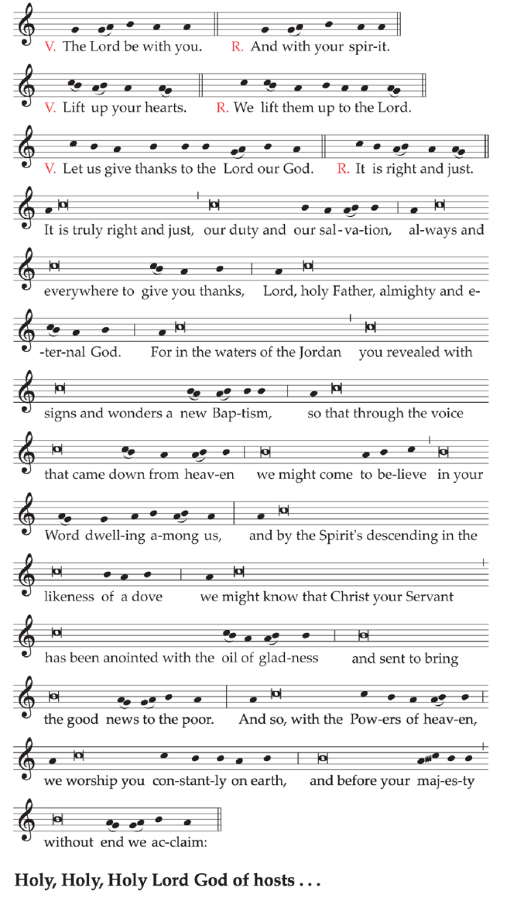

Home
Liturgy
Roman Missal
Proper of Time
Christmas
The Octave of Christmas
The Holy Family of Jesus, Mary and Joseph
The Fifth Day within the Octave
The Sixth Day within the Octave
The Seventh Day within the Octave
Solemnity of Mary, Mother of God
The Second Sunday after the Nativity
The Second Week after the Nativity
Monday of the Second Week after the Nativity
Tuesday of the Second Week after the Nativity
Wednesday of the Second Week after the Nativity
Thursday of the Second Week after the Nativity
Friday of the Second Week after the Nativity
Saturday of the Second Week after the Nativity
The Nativity of the Lord: At the Vigil Mass
This Mass is used on the evening of December 24, either before or after First Vespers (Evening Prayer I) of the Nativity.
Entrance AntiphonCf. Ex 16: 6-7
Today you will know that the Lord will come, and he will save us,
and in the morning you will see his glory.
The Gloria in excelsis (Glory to God in the highest) is said.
Collect
O God, who gladden us year by year
as we awaid in hope for our redemption,
grant that, just as we joyfully welcome
your Only Begotten Son as our Redeemer,
we may also merit to face him confidently
when he comes again as our Judge.
Who lives and reigns with you in the unity of the Holy Spirit,
God, for ever and ever.
The Creed is said. All kneel at the words and by the Holy Spirit was incarnate.
Prayer over the Offerings
As we look forward, O Lord,
to the coming festivities,
may we serve you all the more eagerly
for knowing that in them
you make manifest the beginnings of our redemption.
Through Christ our Lord.
Preface I, II or III of the Nativity of the Lord
When the Roman Canon is used, the proper form of the Communicantes (In communion with those) is said.
Communion AntiphonCf. Is 40: 5
The glory of the Lord will be revealed,
and all flesh will see the salvation of our God.
Prayer after Communion
Grant, O Lord, we pray,
that we may draw new vigor
from celebrating the Nativity of you Only Begotten Son,
by whose heavenly mystery we receive both food and drink.
Who lives and reigns for ever and ever.
A formula of Solemn Blessing may be used.
The Nativity of the Lord: At the Mass during the Night
On the Nativity of the Lord all Priests may celebrate or concelebrate three Masses, provided the Masses are celebrated at their proper times.
Entrance Antiphon
The Lord said to me: You are my Son.Ps 2: 7
It is I who have begotten you this day.
Or:
Let us all rejoice in the Lord, for our Savior has been born in the world.
Today true peace has come down to us from heaven.
The Gloria in excelsis (Glory to God in the highest) is said.
Collect
O God, who have made this most sacred night
radiant with the splendor of the true light,
grant, we pray, that we, who have known the mysteries of his light on earth,
may also delight in his gladness in heaven.
Who lives and reigns with you in the unity of the Holy Spirit,
God, for ever and ever.
The Creed is said. All kneel at the words and by the Holy Spirit was incarnate.
Prayer over the Offerings
May the oblation of this day's feast
be pleasing to you, O Lord, we pray,
that through this most holy exchange
we may be found in the likeness of Christ,
in whom our nature is united to you.
Who lives and reigns for ever and ever.
Preface I, II or III of the Nativity of the Lord
When the Roman Canon is used, the proper form of the Communicantes (In communion with those) is said.
Communion AntiphonJn 1: 14
The Word became flesh, and we have seen his glory.
Prayer after Communion
Grant us, we pray, O Lord our God,
that we, who are gladdened by participation
in the feast of our Redeemer's Nativity,
may through an honorable way of life become worthy of union with him.
Who lives and reigns for ever and ever.
A formula of Solemn Blessing may be used.
The Nativity of the Lord: At the Mass at Dawn
Entrance AntiphonCf. Is 9: 1, 5; Lk 1: 33
Today a light will shine upon us, for the Lord is born to us;
and he will be called Wondrous God,
Prince of peace, Father of future ages:
and his reign will be without end.
The Gloria in excelsis (Glory to God in the highest) is said.
Collect
Grant, we pray, almighty God,
that, as we are bathed in the new radiance of your incarnate Word,
the light of faith, which illumines our minds,
may also shine through in our deeds.
Through our Lord Jesus Christ, your Son,
who lives and reigns with you in the unity of the Holy Spirit,
God, for ever and ever.
The Creed is said. All kneel at the words and by the Holy Spirit was incarnate.
Prayer over the Offerings
May our offerings be worthy, we pray, O Lord,
of the mysteries of the Nativity this day,
that, just as Christ was born a man and also shone forth as God,
so these earthly gifts may confer on us what is divine.
Through Christ our Lord.
Preface I, II or III of the Nativity of the Lord
When the Roman Canon is used, the proper form of the Communicantes (In communion with those) is said.
Communion AntiphonCf. Zec 9: 9
Rejoice, O Daughter Sion; lift up praise, Daughter Jerusalem:
Behold, your King will come, the Holy One and Savior of the world.
Prayer after Communion
Grant us, Lord, as we honor with joyful devotion
the Nativity of your Son,
that we may come to know with fullness of faith
the hidden depths of this mystery
and to love them ever more and more.
Through Christ our Lord.
A formula of Solemn Blessing may be used.
The Nativity of the Lord: At the Mass During the Day
Entrance AntiphonCf. Is 9: 5
A child is born for us, and a son is given to us;
his scepter of power rests upon his shoulder,
and his name will be called Messenger of great counsel.
The Gloria in excelsis (Glory to God in the highest) is said.
Collect
O God, who wonderfully created the dignity of human nature
and still more wonderfully restored it,
grant, we pray,
that we may share in the divinity of Christ,
who humbled himself to share in our humanity.
Who lives and reigns with you in the unity of the Holy Spirit,
God, for ever and ever.
The Creed is said. All kneel at the words and by the Holy Spirit was incarnate.
Prayer over the Offerings
Make acceptable, O Lord, our oblation on this solemn day,
when you manifested the reconciliation
that makes us wholly pleasing in your sight
and inaugurated for us the fullness of divine worship.
Through Christ our Lord.
Preface I, II or III of the Nativity of the Lord
When the Roman Canon is used, the proper form of the Communicantes (In communion with those) is said.
Communion AntiphonCf. Ps 98 (97): 3
All the ends of the earth have seen the salvation of our God.
Prayer after Communion
Grant, O merciful God,
that, just as the Savior of the world, born this day,
is the author of divine generation for us,
so he may be the giver even of immortality.
Who lives and reigns for ever and ever.
A formula of Solemn Blessing may be used.
The Sunday within the Octave of the Nativity of the Lord [Christmas], or, if there is no Sunday, December 30.
THE HOLY FAMILY OF JESUS, MARY AND JOSEPH
Feast
Entrance AntiphonLk 2: 16
The shepherds went in haste,
and found Mary and Joseph and the Infant lying in a manger.
The Gloria in excelsis (Glory to God in the highest) is said.
Collect
O God, who were pleased to give us
the shining example of the Holy Family,
graciously grant that we may imitate them
in practicing the virtues of family life and in the bonds of charity,
and so, in the joy of your house,
delight one day in eternal rewards.
Through our Lord Jesus Christ, your Son,
who lives and reigns with you in the unity of the Holy Spirit,
God, for ever and ever.
When this Feast is celebrated on Sunday, the Creed is said.
Prayer over the Offerings
We offer you, Lord, the sacrifice of conciliation,
humbly asking that,
through the intercession of the Virgin Mother of God and Saint Joseph,
you may establish our families firmly in your grace and your peace.
Through Christ our Lord.
Preface I, II or III of the Nativity of the Lord
When the Roman Canon is used, the proper form of the Communicantes (In communion with those) is said.
Communion AntiphonBar 3: 38
Our God has appeared on the earth, and lived among us.
Prayer after Communion
Bring those you refresh with this heavenly Sacrament,
most merciful Father,
to imitate constantly the example of the Holy Family,
so that, after the trials of this world,
we may share their company for ever.
Through Christ our Lord.
December 29
Fifth Day within the Octave of the Nativity of the Lord [Christmas]
Entrance AntiphonJn 3: 16
God so loved the world that he gave his Only Begotten Son,
so that all who believe in him may not perish,
but may have eterna life.
The Gloria in excelsis (Glory to God in the highest) is said.
Collect
Almighty and invisible God,
who dispersed the darkness of this world
by the coming of your light,
look, we pray, with serene countenance upon us,
that we may acclaim with fitting praise
the greatness of the Nativity of your Only Begotten Son.
Who lives and reigns with you in the unity of the Holy Spirit,
God, for ever and ever.
Prayer over the Offerings
Receive our oblation, O Lord,
by which is brought about a glorious exchange,
that, by offering what you have given,
we may merit to receive your very self.
Through Christ our Lord.
Preface I, II or III of the Nativity of the Lord
When the Roman Canon is used, the proper form of the Communicantes (In communion with those) is said.
Communion AntiphonLk 1: 78
Through the tender mercy of our God,
the Dawn from on high will visit us.
Prayer after Communion
Grant, we pray, almighty God,
that, by the power of these holy mysteries,
our life may be constantly sustained.
Through Christ our Lord.
December 30
Sixth Day within the Octave of the Nativity of the Lord [Christmas]
When there is no Sunday within the Octave of the Nativity [Christmas], the Feast of the Holy Family of Jesus, Mary and Joseph is celebrated on this day.
Entrance AntiphonWis 18: 14-15
When a profound silence covered all things
and night was in the middle of its course,
your all-powerful Word, O Lord,
bounded from heaven's royal throne.
The Gloria in excelsis (Glory to God in the highest) is said.
Collect
Grant, we pray, almighty God,
that the newness of the Nativity in the flesh
of your Only Begotten Son may set us free,
for ancient servitude holds us bound
beneath the yoke of sin.
Through our Lord Jesus Christ, your Son,
who lives and reigns with you in the unity of the Holy Spirit,
God, for ever and ever.
Prayer over the Offerings
Receive with favor, O Lord, we pray,
the offerings of your people,
that what they profess with devotion and faith
may be theirs through these heavenly mysteries.
Through Christ our Lord.
Preface I, II or III of the Nativity of the Lord
When the Roman Canon is used, the proper form of the Communicantes (In communion with those) is said.
Communion AntiphonJn 1: 16
From his fullness we have all received,
grace upon grace.
Prayer after Communion
O God, who touch us through our partaking of your Sacrament,
work, we pray, the effects of its power in our hearts,
that we may be made fit to receive your gift
through this very gift itself.
Through Christ our Lord.
December 31
Seventh Day within the Octave of the Nativity of the Lord [Christmas]
Entrance AntiphonIs 9:5
A child is born for us, and a son is given to us;
his scepter of power rests upon his shoulder,
and his name will be called Messenger of great counsel.
The Gloria in excelsis (Glory to God in the highest) is said.
Collect
Almighty ever-living God,
who in the Nativity of your Son
established the beginning and fulfillment of all religion,
grant, we pray, that we may be numbered
among those who belong to him,
in whom is the fullness of human salvation.
Who lives and reigns with you in the unity of the Holy Spirit,
God, for ever and ever.
Prayer over the Offerings
O God, who give us the gift of true prayer and of peace,
graciously grant that, through this offering,
we may do fitting homage to your divine majesty
and, by partaking of the sacred mystery,
we may be faithfully united in mind and heart.
Through Christ our Lord.
Preface I, II or III of the Nativity of the Lord
When the Roman Canon is used, the proper form of the Communicantes (In communion with those) is said.
Communion Antiphon1 Jn 4: 9
God sent his Only Begotten Son into the world,
so that we might have life through him.
Prayer after Communion
May your people, O Lord,
whom you guide and sustain in many ways,
experience, both now and in the future,
the remedies which you bestow,
that, with the needed solace of things that pass away,
they may strive with ever deepened trust for things eternal.
Through Christ our Lord.
January 1
The Octave Day of the Nativity of the Lord [Christmas]
SOLEMNITY OF MARY, THE HOLY MOTHER OF GOD
Entrance Antiphon
Hail, Holy Mother, who gave birth to the King
who rules heaven and earth for ever.
Or:Cf. Is 9: 1, 5; Lk 1: 33
Today a light will shine upon us, for the Lord is born for us;
and he will be called Wondrous God,
Prince of peace, Father of future ages:
and his reign will be without end.
The Gloria in excelsis (Glory to God in the highest) is said.
Collect
O God, who through the fruitful virginity of Blessed Mary
bestowed on the human race
the grace of eternal salvation,
grant, we pray,
that we may experience the intercession of her,
through whom we were found worthy
to receive the author of life,
our Lord Jesus Christ, your Son,
who lives and reigns with you in the unity of the Holy Spirit,
God, for ever and ever.
The Creed is said.
Prayer over the Offerings
O God, who in your kindness begin all good things
and bring them to fulfillment,
grant to us, who find joy in the Solemnity of the holy Mother of God,
that, just as we glory in the beginnings of your grace,
so one day we may rejoice in its completion.
Through Christ our Lord.
Preface I of the Blessed Virgin Mary (on the Solemnity of the Motherhood).
When the Roman Canon is used, the proper form of the Communicantes (In communion with those) is said.
Communion AntiphonHeb 13: 8
Jesus Christ is the same yesterday, today, and for ever.
Prayer after Communion
We have received this heavenly Sacrament with joy, O Lord:
grant, we pray,
that it may lead us to eternal life,
for we rejoice to proclaim the blessed ever-Virgin Mary
Mother of your Son and Mother of the Church.
Through Christ our Lord.
A formula of Solemn Blessing may be used.
On the days following, when the Mass of the weekday is to be said, the texts given below are used.
SECOND SUNDAY AFTER THE NATIVITY [CHRISTMAS]
Entrance AntiphonWis 18: 14-15
When a profound silence covered all things
and night was in the middle of its course,
your all-powerful Word, O Lord, bounded from heaven's royal throne.
The Gloria in excelsis (Glory to God in the highest) is said.
Collect
Almighty ever-living God,
splendor of faithful souls,
graciously be pleased to fill the world with your glory,
and show yourself to all peoples by the radiance of your light.
Through our Lord Jesus Christ, your Son,
who lives and reigns with you in the unity of the Holy Spirit,
God, for ever and ever.
The Creed is said.
Prayer over the Offerings
Sanctify, O Lord, the offerings we make
on the Nativity of your Only Begotten Son,
for by it you show us the way of truth
and promise the life of the heavenly Kingdom.
Through Christ our Lord.
Preface I, II or III of the Nativity of the Lord
Communion AntiphonCf. Jn 1: 12
To all who would accept him,
he gave the power to become children of God.
Prayer after Communion
Lord our God, we humbly ask you,
that, through the working of this mystery,
our offenses may be cleansed
and our just desires fulfilled.
Through Christ our Lord.
A formula of Solemn Blessing may be used.
[In the Dioceses of the United States]
Sunday between January 2 and January 8
THE EPIPHANY OF THE LORD
Solemnity
The Epiphany of the Lord: At the Vigil Mass
This Mass is used on the evening of the day before the Solemnity, either before or after First Vespers (Evening Prayer I) of the Epiphany
Entrance AntiphonCf. Bar 5: 5
Arise, Jerusalem, and look to the East
and see your children gathered from the rising to the setting of the sun.
The Gloria in excelsis (Glory to God in the highest) is said.
Collect
May the splendor of your majesty, O Lord, we pray,
shed its light upon our hearts,
that we may pass through the shadows of this world
and reach the brightness of our eternal home.
Through our Lord Jesus Christ, your Son,
who lives and reigns with you in the unity of the Holy Spirit,
God, for ever and ever.
The Creed is said.
Prayer over the Offerings
Accept we pray, O Lord, our offerings,
in honor of the appearing of your Only Begotten Son
and the first fruits of the nations,
that to you praise may be rendered
and eternal salvation be ours.
Through Christ our Lord.
Preface of the Epiphany of the Lord.
Communion AntiphonCf. Rev 21: 23
The brightness of God illumined the holy city Jerusalem,
and the nations will walk by its light.
Prayer after Communion
Renewed by sacred nourishment,
we implore your mercy, O Lord,
that the star of your justice
may shine always bright in our minds
and that our true treasure may ever consist in our confession of you.
Through Christ our Lord.
A formula of Solemn Blessing may be used.
The Epiphany of the Lord: At the Mass During the Day
Entrance AntiphonCf. Mal 3: 1; 1 Chr 29: 12
Behold, the Lord, the Mighty One, has come;
and kingship is in his grasp, and power and dominion.
The Gloria in excelsis (Glory to God in the highest) is said.
Collect
O God, who on this day
revealed your Only Begotten Son to the nations
by the guidance of a star,
grant in your mercy that we, who know you already by faith,
may be brought to behold the beauty of your sublime glory.
Through our Lord Jesus Christ, your Son,
who lives and reigns with you in the unity of the Holy Spirit,
God, for ever and ever.
Where it is the practice, if appropriate, the moveable Feasts of the current year may be proclaimed after the Gospel, according to the formula given here.
The Creed is said.
Prayer over the Offerings
Look with favor, Lord, we pray,
on these gifts of your Church,
in which are offered now not gold or frankincense or myrrh,
but he who by them is proclaimed,
sacrificed and received, Jesus Christ.
Who lives and reigns for ever and ever.
Preface of the Epiphany of the Lord.
When the Roman Canon is used, the proper form of the Communicantes (In communion with those) is said.
Communion AntiphonCf. Mt 2: 2
We have seen his star in the East,
and have come with gifts to adore the Lord.
Prayer after Communion
Go before us with heavenly light, O Lord,
always and everywhere,
that we may perceive with clear sight
and revere with true affection
the mystery in which you have willed us to participate.
Through Christ our Lord.
A formula of Solemn Blessing may be used.
WEEKDAYS OF CHRISTMAS TIME
from January 2
to the Saturday before the Feast of
the Baptism of the Lord
These Masses are used on the weekdays to which they are assigned, with the Collect selected as indicated.
Monday of the Second Week After Christmas
Entrance Antiphon
A holy day has dawned upon us:
Come, you nations, and adore the Lord,
for a great light has come down upon the earth.
Collect
Before the Solemnity of the Epiphany
Grant your people, O Lord, we pray,
unshakable strength of faith,
so that all who profess that your Only Begotten Son
is with you for ever in your glory
and was born of the Virgin Mary
in a body truly like our own
may be freed from present trials
and given a place in abiding gladness.
Through our Lord Jesus Christ, your Son,
who lives and reigns with you in the unity of the Holy Spirit,
God, for ever and ever.
After the Solemnity of the Epiphany
O God, whose eternal Word adorns the face of the heavens
yet accepted from the Virgin Mary the frailty of our flesh,
grant, we pray,
that he who appeared among us as the splendor of truth
may go forth in the fullness of power
for the redemption of the world.
Who lives and reigns with you in the unity of the Holy Spirit,
God, for ever and ever.
Prayer over the Offerings
Receive our oblation, O Lord,
by which is brought about a glorious exchange,
that, by offering what you have given,
we may merit to receive your very self.
Through Christ our Lord.
Preface of the Nativity before the Solemnity of the Epiphany; Preface of the Epiphany or of the Nativity after the Solemnity.
Communion AntiphonJn 1: 14
We have seen his glory, the glory of an only Son coming from the Father,
filled with grace and truth.
Prayer after Communion
Grant, we pray, almighty God,
that, by the power of these holy mysteries,
our life may be constantly sustained.
Through Christ our Lord.
Tuesday of the Second Week after Christmas
Entrance AntiphonPs 118 (117): 26-27
Blessed is he who comes in the name of the Lord:
The Lord is God and has given us light.
Collect
Before the Solemnity of the Epiphany
O God, who in the blessed childbearing of the holy Virgin Mary
kept the flesh of your Son
free from the sentence incurred by the human race,
grant, we pray,
that we, who have been taken up into this new creation,
may be freed from the ancient taint of sin.
Through our Lord Jesus Christ, your Son,
who lives and reigns with you in the unity of the Holy Spirit,
God, for ever and ever.
After the Solemnity of the Epiphany
O God, whose Only Begotten Son
has appeared in our very flesh,
grant, we pray, that we may be inwardly transformed
through him whom we recognize as outwardly like ourselves.
Who lives and reigns with you in the unity of the Holy Spirit,
God, for ever and ever.
Prayer over the Offerings
Receive with favor, O Lord, we pray, the offerings of your people,
that what they profess with devotion and faith
may be theirs through these heavenly mysteries.
Through Christ our Lord.
Preface of the Nativity before the Solemnity of the Epiphany; Preface of the Epiphany or of the Nativity after the Solemnity.
Communion AntiphonEph 2: 4; Rom 8: 3
Because of that great love of his with which God loved us,
he sent his Son in the likeness of sinful flesh.
Prayer after Communion
O God, who touch us through our partaking of your Sacrament,
work, we pray, the effects of its power in our hearts,
that we may be made fit to receive your gift
through this very gift itself.
Through Christ our Lord.
Wednesday of the Second Week after Christmas
Entrance AntiphonIs 9: 1
A people who walked in darkness has seen a great light;
for those dwelling in a land of deep gloom, a light has shone.
Collect
Before the Solemnity of the Epiphany
Grant us, almighty God, that the bringer of your salvation,
who for the world’s redemption came forth with newness of heavenly light,
may dawn afresh in our hearts and bring us constant renewal.
Who lives and reigns with you in the unity of the Holy Spirit,
God, for ever and ever.
After the Solemnity of the Epiphany
O God, who bestow light on all the nations,
grant your peoples the gladness of lasting peace
and pour into our hearts that brilliant light
by which you purified the minds of our fathers in faith.
Through our Lord Jesus Christ, your Son,
who lives and reigns with you in the unity of the Holy Spirit,
God, for ever and ever.
Prayer over the Offerings
O God, who give us the gift of true prayer and of peace,
graciously grant that, through this offering,
we may do fitting homage to your divine majesty
and, by partaking of the sacred mystery,
we may be faithfully united in mind and heart.
Through Christ our Lord.
Preface of the Nativity before the Solemnity of the Epiphany; Preface of the Epiphany or of the Nativity after the Solemnity.
Communion Antiphon 1 Jn 1: 2
That life which was with the Father became visible, and has appeared to us.
Prayer after Communion
May your people, O Lord,
whom you guide and sustain in many ways,
experience, both now and in the future,
the remedies which you bestow,
that, with the needed solace of things that pass away,
they may strive with ever deepened trust for things eternal.
Through Christ our Lord.
Thursday of the Second Week after Christmas
Entrance AntiphonCf. Jn 1: 1
In the beginning and before all ages, the Word was God
and he humbled himself to be born the Savior of the world.
Collect
O God, who by the Nativity of your Only Begotten Son
wondrously began for your people the work of redemption,
grant, we pray, to your servants such firmness of faith,
that by his guidance they may attain the glorious prize you have promised.
Through our Lord Jesus Christ, your Son,
who lives and reigns with you in the unity of the Holy Spirit,
God, for ever and ever.
After the Solemnity of the Epiphany
O God, who through your Son raised up your eternal light for all nations,
grant that your people may come to acknowledge
the full splendor of their Redeemer,
that, bathed ever more in his radiance,
they may reach everlasting glory.
Through our Lord Jesus Christ, your Son,
who lives and reigns with you in the unity of the Holy Spirit,
God, for ever and ever.
Prayer over the Offerings
Receive our oblation, O Lord,
by which is brought about a glorious exchange,
that, by offering what you have given,
we may merit to receive your very self.
Through Christ our Lord.
Preface of the Nativity before the Solemnity of the Epiphany; Preface of the Epiphany or of the Nativity after the Solemnity.
Communion AntiphonJn 3: 16
God so loved the world that he gave his Only Begotten Son,
so that all who believe in him may not perish, but may have eternal life.
Prayer after Communion
Grant, we pray, almighty God,
that, by the power of these holy mysteries,
our life may be constantly sustained.
Through Christ our Lord.
Friday of the Second Week after Christmas
Entrance AntiphonPs 112 (111): 4
A light has risen in the darkness for the upright of heart;
the Lord is generous, merciful and just.
Collect
Before the Solemnity of the Epiphany
Cast your kindly light upon your faithful, Lord, we pray,
and with the splendor of your glory
set their hearts ever aflame,
that they may never cease to acknowledge their Savior
and may truly hold fast to him.
Who lives and reigns with you in the unity of the Holy Spirit,
God, for ever and ever.
After the Solemnity of the Epiphany
Grant, we ask, almighty God,
that the Nativity of the Savior of the world,
made known by the guidance of a star,
may be revealed ever more fully to our minds.
Through our Lord Jesus Christ, your Son,
who lives and reigns with you in the unity of the Holy Spirit,
God, for ever and ever.
Prayer over the Offerings
Receive with favor, O Lord, we pray, the offerings of your people,
that what they profess with devotion and faith
may be theirs through these heavenly mysteries.
Through Christ our Lord.
Preface of the Nativity before the Solemnity of the Epiphany; Preface of the Epiphany or of the Nativity after the Solemnity.
Communion Antiphon1 Jn 4: 9
By this the love of God was revealed to us:
God sent his Only Begotten Son into the world,
so that we might have life through him.
Prayer after Communion
O God, who touch us through our partaking of your Sacrament,
work, we pray, the effects of its power in our hearts,
that we may be made fit to receive your gift
through this very gift itself.
Through Christ our Lord.
Saturday of the Second Week after Christmas
Entrance AntiphonGal 4: 4-5
God sent his Son, born of a woman,
so that we might receive adoption as children.
Collect
Before the Solemnity of the Epiphany
Almighty ever-living God,
who were pleased to shine forth with new light
through the coming of your Only Begotten Son,
grant, we pray,
that, just as he was pleased to share our bodily form
through the childbearing of the Virgin Mary,
so we, too, may one day merit
to become companions in his kingdom of grace.
Who lives and reigns with you in the unity of the Holy Spirit,
God, for ever and ever.
After the Solemnity of the Epiphany
Almighty ever-living God,
who through your Only Begotten Son
have made us a new creation for yourself,
grant, we pray,
that by your grace we may be found in the likeness of him,
in whom our nature is united to you.
Who lives and reigns with you in the unity of the Holy Spirit,
God, for ever and ever.
Prayer over the Offerings
O God, who give us the gift of true prayer and of peace,
graciously grant that, through this offering,
we may do fitting homage to your divine majesty
and, by partaking of the sacred mystery,
we may be faithfully united in mind and heart.
Through Christ our Lord.
Preface of the Nativity before the Solemnity of the Epiphany; Preface of the Epiphany or of the Nativity after the Solemnity.
Communion AntiphonJn 1: 16
From his fullness we have all received,
grace upon grace.
Prayer after Communion
May your people, O Lord,
whom you guide and sustain in many ways,
experience, both now and in the future,
the remedies which you bestow,
that, with the needed solace of things that pass away,
they may strive with ever deepened trust for things eternal.
Through Christ our Lord.
Sunday after the Epiphany of the Lord
THE BAPTISM OF THE LORD
Where the Solemnity of the Epiphany is transferred to Sunday, if this Sunday occurs on January 7 or 8, the Feast of the Baptism of the Lord is celebrated on the following Monday.
Entrance AntiphonCf. Mt 3: 16-17
After the Lord was baptized, the heavens were opened,
and the Spirit descended upon him like a dove,
and the voice of the Father thundered:
This is my beloved Son, with whom I am well pleased.
The Gloria in excelsis (Glory to God in the highest) is said.
Collect
Almighty ever-living God,
who, when Christ had been baptized in the River Jordan
and as the Holy Spirit descended upon him,
solemnly declared him your beloved Son,
grant that your children by adoption,
reborn of water and the Holy Spirit,
may always be well pleasing to you.
Through our Lord Jesus Christ, your Son,
who lives and reigns with you in the unity of the Holy Spirit,
God, for ever and ever.
Or:
O God, whose Only Begotten Son
has appeared in our very flesh,
grant, we pray, that we may be inwardly transformed
through him whom we recognize as outwardly like ourselves.
Who lives and reigns with you in the unity of the Holy Spirit,
God, for ever and ever.
The Creed is said.
Prayer over the Offerings
Accept, O Lord, the offerings
we have brought to honor the revealing of your beloved Son,
so that the oblation of your faithful
may be transformed into the sacrifice of him
who willed in his compassion
to wash away the sins of the world.
Who lives and reigns for ever and ever.
Preface: The Baptism of the Lord.

Text without music:
V. The Lord be with you.
R. And with your spirit.
V. Lift up your hearts.
R. We lift them up to the Lord.
V. Let us give thanks to the Lord our God.
R. It is right and just.
It is truly right and just, our duty and our salvation,
always and everywhere to give you thanks,
Lord, holy Father, almighty and eternal God.
For in the waters of the Jordan
you revealed with signs and wonders a new Baptism,
so that through the voice that came down from heaven
we might come to believe in your Word dwelling among us,
and by the Spirit’s descending in the likeness of a dove
we might know that Christ your Servant
has been anointed with the oil of gladness
and sent to bring the good news to the poor.
And so, with the Powers of heaven,
we worship you constantly on earth,
and before your majesty
without end we acclaim:
Holy, Holy, Holy Lord God of hosts...
Communion AntiphonJn 1: 32, 34
Behold the One of whom John said:
I have seen and testified that this is the Son of God.
Prayer after Communion
Nourished with these sacred gifts,
we humbly entreat your mercy, O Lord,
that, faithfully listening to your Only Begotten Son,
we may be your children in name and in truth.
Through Christ our Lord.
Ordinary Time lasts from the Monday after this Sunday to the Tuesday before Lent. For Masses both on Sundays and on weekdays, the texts given here are used.